library(tidyverse)
penguins_clean <- penguins |>
select(species, where(is.numeric)) |>
select(-year) |>
drop_na() |>
mutate(across(where(is.numeric), scale))
penguins_mat <- penguins_clean |> select(where(is.numeric)) |> as.matrix()
penguins_svd <- svd(penguins_mat)
penguins_pca_df <- cbind(penguins_clean,
data.frame(u1 = penguins_svd$u[,1],
u2 = penguins_svd$u[,2]))
penguins_pca <- ggplot(penguins_pca_df, aes(x=u1, y=u2, color=species)) +
geom_point() +
theme_bw() +
xlab("PC1") +
ylab("PC2") +
theme(legend.position="bottom") +
scale_color_brewer(name="Species", type="qual", palette=2)STA 9890 - Unsupervised Learning: IV. Nonlinear Dimension Reduction
\[\newcommand{\R}{\mathbb{R}} \newcommand{\E}{\mathbb{E}} \newcommand{\V}{\mathbb{V}} \newcommand{\P}{\mathbb{P}} \newcommand{\C}{\mathbb{C}} \newcommand{\bbeta}{\mathbb{\beta}} \newcommand{\bone}{\mathbf{1}} \newcommand{\bzero}{\mathbf{0}} \newcommand{\ba}{\mathbf{a}} \newcommand{\bb}{\mathbf{b}} \newcommand{\bc}{\mathbf{c}} \newcommand{\bv}{\mathbf{v}} \newcommand{\br}{\mathbf{r}} \newcommand{\bw}{\mathbf{w}} \newcommand{\bx}{\mathbf{x}} \newcommand{\by}{\mathbf{y}} \newcommand{\bz}{\mathbf{z}} \newcommand{\bX}{\mathbf{X}} \newcommand{\bA}{\mathbf{A}} \newcommand{\bB}{\mathbf{B}} \newcommand{\bC}{\mathbf{C}} \newcommand{\bD}{\mathbf{D}} \newcommand{\bu}{\mathbf{u}} \newcommand{\bU}{\mathbf{U}} \newcommand{\bV}{\mathbf{V}} \newcommand{\bI}{\mathbf{I}} \newcommand{\bH}{\mathbf{H}} \newcommand{\bW}{\mathbf{W}} \newcommand{\bK}{\mathbf{K}} \newcommand{\bR}{\mathbf{R}} \newcommand{\argmin}{\text{arg\,min}} \newcommand{\argmax}{\text{arg\,max}} \newcommand{\MSE}{\text{MSE}} \newcommand{\Fcal}{\mathcal{F}} \newcommand{\Dcal}{\mathcal{D}} \newcommand{\Ycal}{\mathcal{Y}} \newcommand{\Ocal}{\mathcal{O}} \newcommand{\bv}{\mathbf{v}} \newcommand{\Tr}{\text{Tr}}\]
Today, we’re going to continue our study of dimension reduction with a discussion of non-linear DR methods.
Why Go Beyond Linearity?
Before we get started, let’s review a couple of key facts about PCA, our prototypical linear dimension reduction method.
- PCA attempts to preserve Euclidean distances as far as possible.
TipProof
I’m going to write this out for completeness, but you don’t need to be able to reproduce this argument in detail. To see how PCA preserves distances let’s look at the sum of pairwise distances between all points in the data set:
\[\begin{align*} \sum_{i, j} \|\bx_i - \bx_j\|_2^2 &= \sum_{i, j} \|(\bx_i - \overline{\bx}) - (\bx_j - \overline{\bx})\|_2^2 \\ &= \sum_{i, j} \|\tilde{\bx_i} - \tilde{\bx_j}\|_2^2 \\ &= n \sum_i \|\tilde{\bx}_i - \overline{\bx}\|_2^2 \end{align*}\]
where \(\overline{\bx}\) is the centroid (average) of all of the data points and \(\tilde{\bx}_i = \bx_i - \overline{\bx}\) is the ‘centered’ \(\bx_i\). The passage to the last line is standard in statistics: you have likely seen it several times before in the derivation of sample variance.1
So now let’s write this in matrix form: if we arrange our data into a matrix \(\bX\), we could write this as something like \(\|\bX - \overline{\bx}\|_2^2\) except the dimensions don’t quite match (\(\bX \in \R^{n \times p}\) while \(\overline{\bx} \in \R^p\) is a vector). We really want a ‘broadcasted’ version of \(\overline{\bx}\) that is an \(\R^{n \times p}\) matrix with \(\overline{\bx}\) on each row. A special matrix called the centering matrix \(\bH\) will do exactly this for us.2 Let
\[\bH = \bI_{n \times n} - \frac{1}{n}\bone_n\bone^{\top}_n\]
where \(\bI_{n \times n}\) is the identity matrix and \(\bone_n\) is an \(n\)-vector of all ones. If we apply this to \(\bX\), we get
\[\bH \bX = \left(\bI - \frac{1}{n}\bone_n\bone^{\top}_n\right)\bX = \bX - \bone_n(\bone_n/n)^{\top}\bX = \bX - \bone_n\overline{\bx}\]
as desired. So we can finally express our sums of squared distances as
\[\sum_{i, j} \|\bx_i - \bx_j\|^2 = n \|\bX - \bone_n \overline{\bx}\|_2^2\]
From here, we’re able to use a bit more linear algebra trickery:
\[\begin{align*} n \|\bX - \bone_n \overline{\bx}\|_2^2 &= n \Tr\left(\|\bX - \bone_n \overline{\bx}\|_2^2\right) \\ &= n \Tr\left(\|\bH\bX\|_2^2\right) \\ &= n\Tr\left((\bH\bX)^{\top}\bH\bX\right) \\ &= n\Tr\left(\overline{\bX}^{\top}\overline{\bX}\right) \\ &= n\sum_{j} \lambda_j \end{align*}\]
And we know by the Eckert-Young theorem that the SVD of of \(\overline{\bX}\) gives us the best low-rank approximation.
Because PCA is focused on the sum of squared distances, it is most interested in large distances and will work ‘harder’ to preserve those rather than small distances. In this respect, PCA is no different than other \(\ell_2\)-based methods we’ve seen earlier like OLS.
PCA is a linear method, in the sense that the mapping from \(\R^P\), the original high-dimensional space, to \(\R^p\), the target lower-dimensional space is linear.
PCA gives us the ability to move ‘back and forth’ between the original and target spaces; it isn’t a one-way trip.
As we discussed last week, these are all good properties for a baseline DR approach, but we might want to relax some of them. In particular, let’s start by reconsidering the focus on Euclidean distance.
The Tyranny of Small Distances3
As we discussed in the clustering context, a focus on large distances is not necessarily the most important aspect of distance to preserve. We may instead care more about ensuring each point remains close to its nearest neighbors than ensuring that long distances are preserved. This is particularly useful if we are using dimension reduction to pre-process for some sort of locality-based next step, e.g., certain forms of clustering or \(K\)-nearest neighbor type models.
While we didn’t really focus on it, one interpretation of PCA is based on a Gaussian distribution (recall that the Gaussian is basically our \(\ell_2\)-distance based distribution). As you recall, the Gaussian is a light-tailed distribution and it falls of quickly as you get far from the mean. Accordingly, any Gaussian-based dimension reduction will try very hard to avoid big changes in distance. But what if we used an approach based on a heavier-tailed distribution? Hopefully, it would be more accepting of changes to large distances.4
This is exactly the idea of a powerful non-linear dimension reduction technique called \(t\)-distributed stochastic neighbor embedding or \(t\)-SNE for short.
The probabilistic machinery behind \(t\)-SNE is a bit complex, so we’ll just go through it at a high level:
-
Given \(n\) points in \(\R^P\), we can assume a sort of conditional Gaussianity and define conditional probabilities for each pair of observations \((i, j)\) as
\[p_{j | i} \propto e^{-\|\bx_i - \bx_j\|_2^2/2\sigma_i^2}\]
with \(p_{i|i} = 0\) and \(\sum_j p_{j|i} = 1\). That is, \(p_{j|i}\) is the conditional probability of getting \(\bx_j\) from a Gaussian distribution centered at \(\bx_i\) conditional on all of the other points in our data. This gives us a sort of “soft” nearest neighbors. The points nearest to \(x_i\) will have high \(p_{j|i}\) and far away points will have smaller values.
-
Symmetrize these probabilities to construct ‘joint’ probabilities
\[p_{ij} = \frac{p_{j|i} + p_{i|j}}{2n} = p_{ji}\]
-
Next, we construct points \(\by_i \in \R^p\) and do the same set-up under a \(t\)-distribution. This is almost always a \(t\) with one degree of freedom, i.e., a Cauchy.
\[q_{j|i} \propto \frac{1}{1+\|\by_i - \by_j\|^2}\]
which we then normalize to get
\[q_{ij} = q_{ji} = \frac{1/(1+\|\by_i - \by_j\|^2)}{\sum_k \sum_{l \neq k}1/(1 + \|\by_k - \by_l\|^2)}\]
Note that, in the first step the \(\bx_i\) were fixed and hence the \(p_{ij}\) were fixed. Here, the \(q_{ij}\) are a function of the to-be-determined \(\by_i\) values.
-
Determine \(\by_i\) by minimizing the KL divergence between \(P\) and \(Q\):
\[\argmin_{\by_1, \dots, \by_n \in \R^p} KL(P \| Q) = \sum_{i,j} p_{ij} \log(p_{ij}/q_{ij})\]
where \(q_{ij}\) is a function of the \(\by_i\) values.
This last bit of optimization is not easy and profoundly non-convex, but gradient descent tends to do a good job.
This process may seem a bit ad hoc (and it is), but sometimes is works remarkably well. Let’s compare it against PCA on the penguins data:
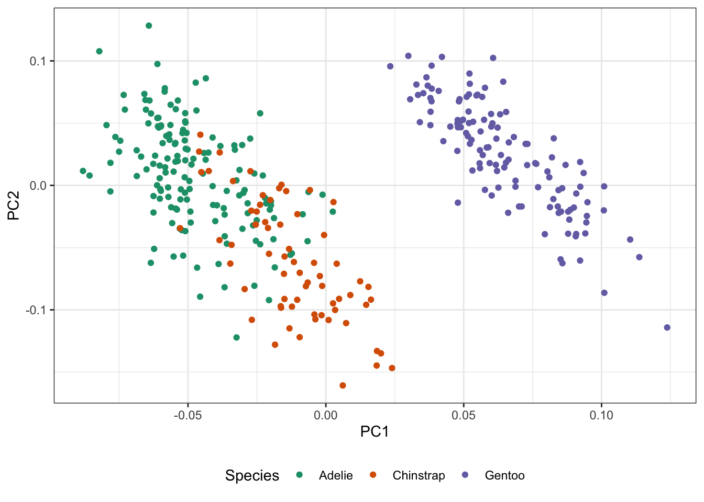
Here, we created a numeric matrix for the penguins data penguins_mat and applied PCA ‘by hand’. The Rtsne package will implement \(t\)-SNE for us:
library(Rtsne)
penguins_tsne <- Rtsne(penguins_mat, dims=2, pca=FALSE)
# Target R2 for visualization
# Don't use a PCA pre-processing
penguins_tsne_df <- cbind(penguins_clean,
data.frame(y1=penguins_tsne$Y[,1],
y2=penguins_tsne$Y[,2]))
penguins_tsne <- ggplot(penguins_tsne_df, aes(x=y1, y=y2, color=species)) +
geom_point() +
theme_bw() +
xlab("tSNE Dimension 1") +
ylab("tSNE Dimension 2") +
theme(legend.position="bottom") +
scale_color_brewer(name="Species", type="qual", palette=2)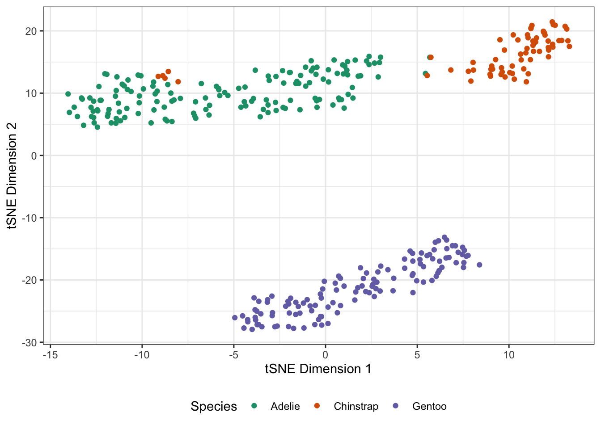
As you see here, the \(t\)-SNE outputs tend to be a bit ‘clumpier’ and well-separated. This is a well-known habit of \(t\)-SNE: it’s very good at forming visual clusters, even when some arguably shouldn’t exist and you should be careful about reading too much into the results.
For example, if we take our penguins data and add a crazy outlier, it remains obvious in PCA while \(t\)-SNE makes it seem more tightly clustered.
library(patchwork)
penguins_outlier <- penguins |>
select(species, where(is.numeric)) |>
select(-year) |>
drop_na() |>
mutate(across(where(is.numeric), scale)) |>
mutate(species = as.character(species))
penguins_outlier[37,1] <- "Blue Whale"
penguins_outlier[37,-1] <- 10 * penguins_outlier[37,-1]
penguins_outlier_mat <- penguins_outlier |>
select(where(is.numeric)) |> as.matrix()
penguins_outlier_svd <- svd(penguins_outlier_mat)
penguins_outlier_pca_df <- cbind(penguins_outlier,
data.frame(u1 = penguins_outlier_svd$u[,1],
u2 = penguins_outlier_svd$u[,2]))
penguins_outlier_pca <- ggplot(penguins_outlier_pca_df,
aes(x=u1, y=u2, color=species)) +
geom_point() +
theme_bw() +
xlab("PC1") +
ylab("PC2") +
theme(legend.position="bottom") +
scale_color_brewer(name="Species", type="qual", palette=2) +
ggtitle("Principal Components Analysis")
penguins_outlier_tsne <- Rtsne(penguins_outlier_mat, dims=2, pca=FALSE)
penguins_outlier_tsne_df <- cbind(penguins_outlier,
data.frame(y1=penguins_outlier_tsne$Y[,1],
y2=penguins_outlier_tsne$Y[,2]))
penguins_outlier_tsne <- ggplot(penguins_outlier_tsne_df,
aes(x=y1, y=y2, color=species)) +
geom_point() +
theme_bw() +
xlab("tSNE Dimension 1") +
ylab("tSNE Dimension 2") +
theme(legend.position="bottom") +
scale_color_brewer(name="Species", type="qual", palette=2) +
ggtitle("t-SNE Analysis")
penguins_outlier_pca / penguins_outlier_tsne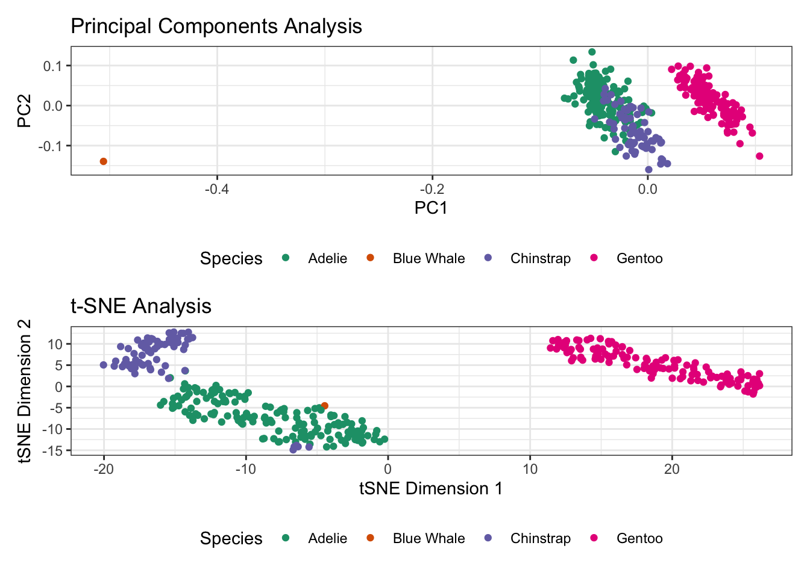
Here, \(t\)-SNE forced our outlier point closer to the bulk of the data making its ‘outlierness’ invisible, while PCA left it out in the wilderness. This gets at a somewhat unintuitive property of neighbor-focused methods. Even outliers have nearest neighbors, though they may not be so near. Whether this is useful or harmful is problem specific.
Returning to \(t\)-SNE, we have a few cautions that are worth noting:
-
Hyperparameters matter. \(t\)-SNE has a few hyperparameters to be aware of:
-
\(\eta\) (
eta): the learning rate (step size) used in the optimization - the random seed used for initialization
perplexity
The first two of these are pretty easy - if you re-run from a few initial values you can quickly get a sense of the reliability of your results. The
perplexityparameter requires a bit more caution.perplexitycontrols the standard deviation of the Gaussians used to create the \(p\) weights in the original (pre-projection) space. It has a tricky tradeoff: if we set it very low (corresponding to a low \(\sigma\)), the Gaussian will really only pick up relatively close neighbors, and if we set it too high, the Gaussian flattens out and everyone becomes equally close.On our penguins:
-
\(\eta\) (
c(2, 5, 10, 30, 50, 110) |>
map(\(p) Rtsne(penguins_mat, perplexity=p, pca=FALSE)) |>
map(\(r) data.frame(y1=r$Y[,1], y2=r$Y[,2], Perplexity=r$perplexity)) |>
map(\(r) cbind(penguins_clean, r)) |>
list_rbind() |>
ggplot(aes(x=y1, y=y2, color=species)) +
facet_wrap(~Perplexity,
scales="free",
labeller=label_both) +
geom_point() +
theme_bw() +
theme(legend.position="bottom") +
xlab("t-SNE Dimension 1") +
ylab("t-SNE Dimension 2") +
scale_color_brewer(name="Species", type="qual", palette=2)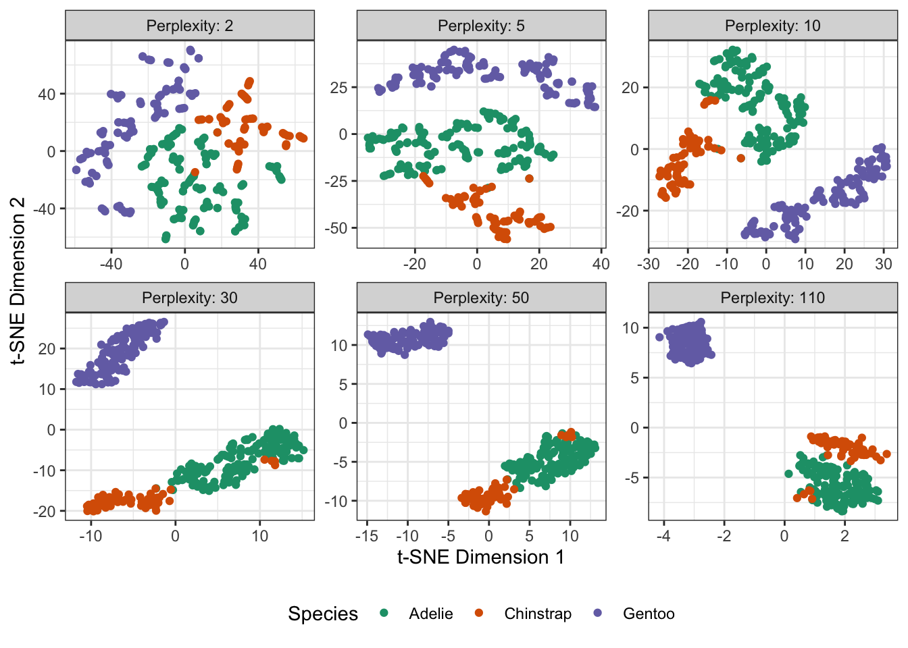
Here, the data is not _too_ hard, so as long as the perplexity is not too small, we're ok, but for harder data
sets this parameter becomes even more important. The dimensions in the \(t\)-SNE space are meaningless. While PCA attempts to preserve dimensional information, neither cluster size nor cluster distances really mean much in the \(t\)-SNE output.
\(t\)-SNE can create clusters out of nothing, especially when given small perplexity. Let’s do the same analysis as before, but now on pure noise:
N <- 500
p <- 50
PURE_NOISE <- matrix(rnorm(N * p), nrow=N)
c(2, 5, 10, 30, 50, 110) |>
map(\(p) Rtsne(PURE_NOISE, perplexity = p, pca=FALSE)) |>
map(\(r) data.frame(y1=r$Y[,1], y2=r$Y[,2], Perplexity=r$perplexity)) |>
list_rbind() |>
ggplot(aes(x=y1, y=y2)) +
facet_wrap(~Perplexity,
scales="free",
labeller=label_both) +
geom_point() +
theme_bw() +
theme(legend.position="bottom") +
xlab("t-SNE Dimension 1") +
ylab("t-SNE Dimension 2")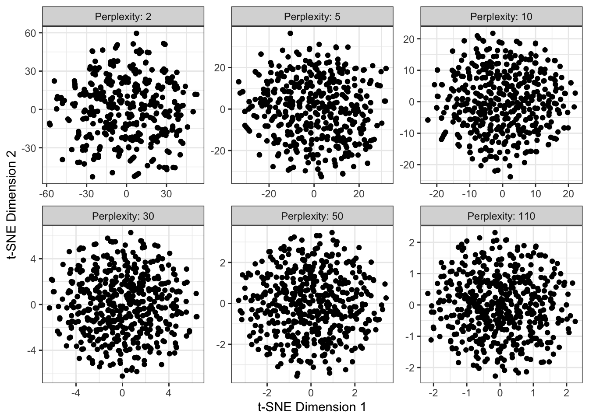
This is not so bad, except at small perplexity, but if we add some
suggestive coloring, we can easily be misled: N <- 500
p <- 50
PURE_NOISE <- matrix(rnorm(N * p), nrow=N)
c(2, 5, 10, 30, 50, 110) |>
map(\(p) Rtsne(PURE_NOISE, perplexity = p, pca=FALSE)) |>
map(\(r) data.frame(y1=r$Y[,1],
y2=r$Y[,2],
Perplexity=r$perplexity,
color=letters[kmeans(r$Y, centers=26)$cluster])) |>
list_rbind() |>
ggplot(aes(x=y1, y=y2, color=color)) +
facet_wrap(~Perplexity,
scales="free",
labeller=label_both) +
geom_point() +
theme_bw() +
theme(legend.position="bottom") +
xlab("t-SNE Dimension 1") +
ylab("t-SNE Dimension 2") +
guides(color="none")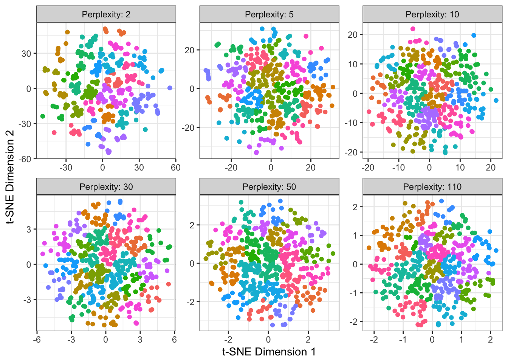
This is the exact same simulation as the previous plot, but now we've
applied $K$-means to the $t$-SNE output and used it to color the points.So \(t\)-SNE is incredibly powerful, but as with \(K\)-means, it will always do its job and find some structure, even if there’s not really anything there. It should be used with caution and care, always making sure to validate results in the downstream context.
A challenge that \(t\)-SNE has for validation - that PCA does not - is that we can’t push new or test points through \(t\)-SNE. While PCA defines a mapping we could apply to new data, \(t\)-SNE is a ‘one-and-done’ operation, without the ability to apply the same mapping to a new data set.
More on t-SNE
One of inventors of \(t\)-SNE gave a great talk at Google a few years back:
UMAP
\(t\)-SNE worked by attempting to retain a simple form of local structure, but the underlying results are somewhat fragile as we have seen. The UMAP technique (“Uniform Manifold Approximation and Projection”) attempts to similarly preserve neighbor structure, but doing so in a way that is more closely based on nearest neighbor connectivity (like we saw with graph embeddings for clustering) than the distributional assumptions of \(t\)-SNE. In fact, UMAP goes a few steps beyond what we already saw with graph embeddings and tries to not only keep track of ‘pairwise’ relationships but also triples, quadruples, etc.. The algorithm becomes rather hard to describe, but it’s fast and powerful in practice:
library(umap)
set_colnames <- function(x, nm){colnames(x) <- nm; x}
penguins_mat |>
umap() |>
pluck("layout") |>
set_colnames(c("y1", "y2")) |>
as_tibble() |>
cbind(penguins_clean) |>
ggplot(aes(x=y1, y=y2, color=species)) +
geom_point() +
theme_bw() +
theme(legend.position='bottom') +
scale_color_brewer(name="Species", type="qual", palette=2) +
xlab("UMAP Dimension 1") +
ylab("UMAP Dimension 2")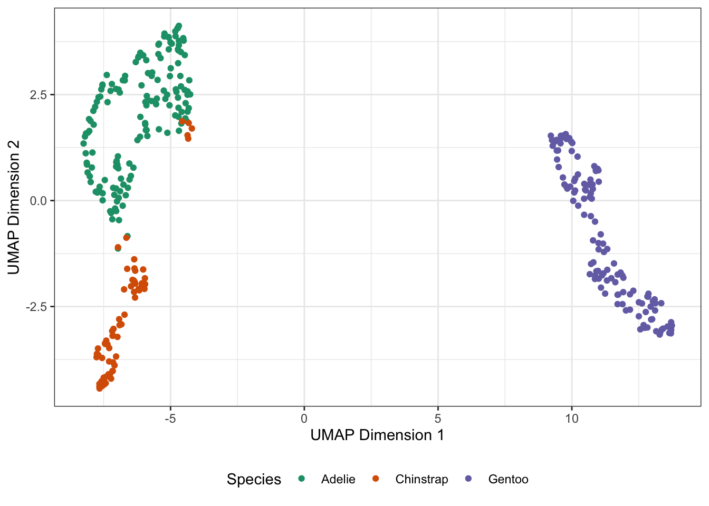
So far, not so different than \(t\)-SNE for this simple data. If we apply our three methods to a more complex data set, we get some interesting findings:
library(Rtsne)
library(umap)
library(ggplot2)
library(patchwork)
mnist <- dslabs::read_mnist()
mnist_X <- mnist |> pluck("train", "images")
mnist_Y <- mnist |> pluck("train", "labels")
mnist_ix <- sample(NROW(mnist_X), 3000)
mnist_X <- mnist_X[mnist_ix,]
mnist_Y <- mnist_Y[mnist_ix]
pca_mnist <- svd(mnist_X, nu=2, nv=2)
df_pca <- data.frame(u1=pca_mnist$u[,1],
u2=pca_mnist$u[,2],
label=mnist_Y,
method="PCA",
mnist_index=mnist_ix)
tsne_mnist <- Rtsne(mnist_X, check_duplicates = FALSE, pca=FALSE)
df_tsne <- data.frame(u1=tsne_mnist$Y[,1],
u2=tsne_mnist$Y[,2],
label=mnist_Y,
method="t-SNE",
mnist_index=mnist_ix)
umap_mnist <- umap(mnist_X)
df_umap <- data.frame(u1=umap_mnist$layout[,1],
u2=umap_mnist$layout[,2],
label=mnist_Y,
method="UMAP",
mnist_index=mnist_ix)
rbind(df_pca, df_tsne, df_umap) |>
mutate(label=factor(label)) |>
ggplot(aes(x=u1, y=u2, color=label)) +
geom_point() +
facet_wrap(~method,
scales="free") +
theme_bw() +
theme(legend.position="bottom") +
guides(color="none") +
xlab("First Dimension [Unitless]") +
ylab("Second Dimension [Unitless]")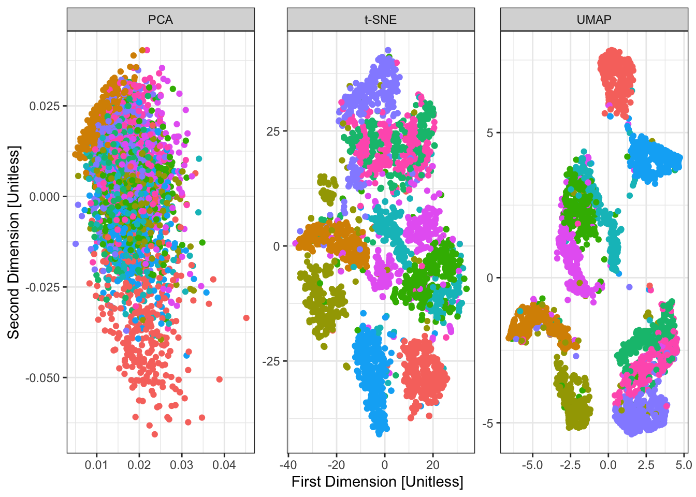
Here, we have applied all three methods to the famous MNIST data, a set of scanned handwritten digits, originally used to develop a ZIP code sorter for the US Postal Service. We have 10 known clusters here (the ten digits) and the data look something like the following:
view_mnist <- function(n){
# Recast into a 28x28 matrix and rotate to get correct alignment
digit_matrix <- matrix(mnist$train$images[n,],
nrow = 28,
ncol = 28) |>
t() |>
apply(2, rev) |>
t()
image(digit_matrix,
col=grey.colors(255),
main=paste("Label:", mnist$train$labels[n]),
axes=FALSE)
}
view_mnist(10)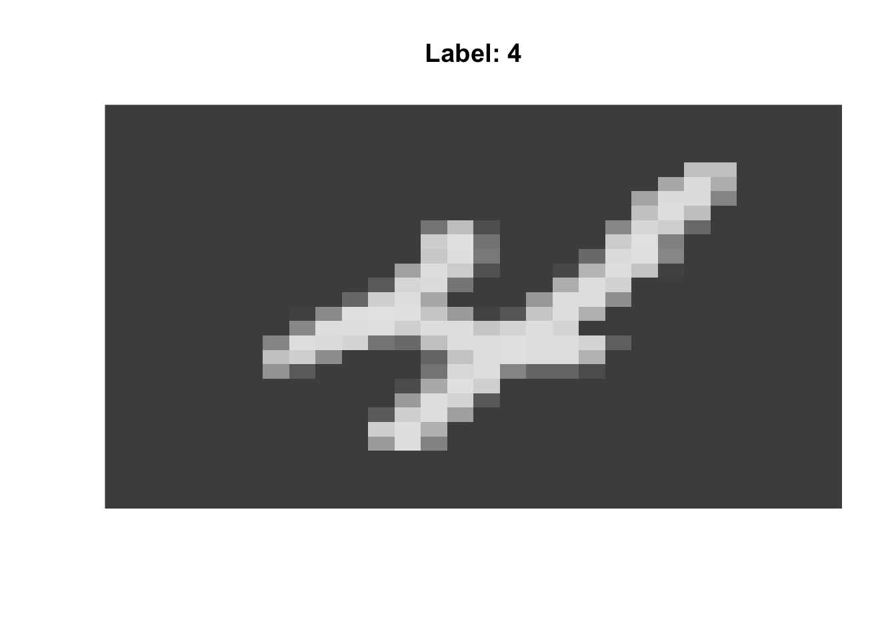
With this context, it is interesting to think about what the axes identified by our dimension reduction methods might be capturing. To do this, we can see what the 5 highest and lowest points on each axis look like and do some interpretation:
High on PC-1:
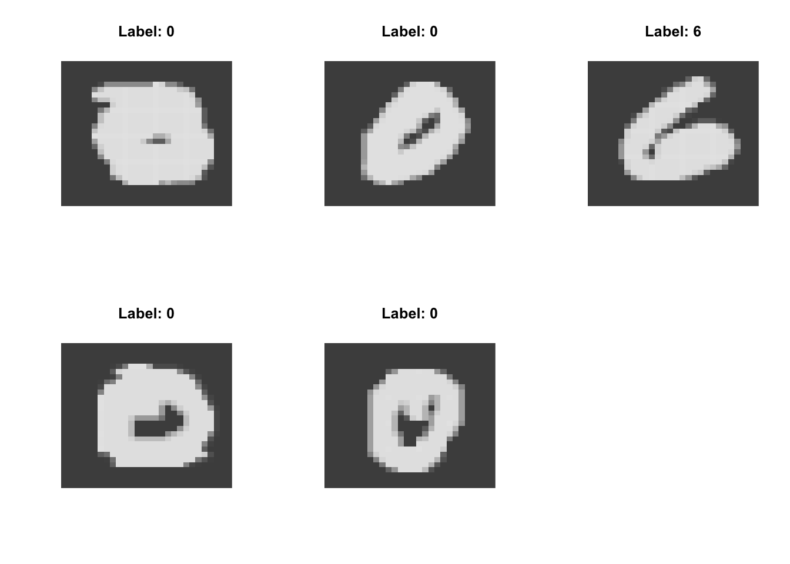
Low on PC-1:
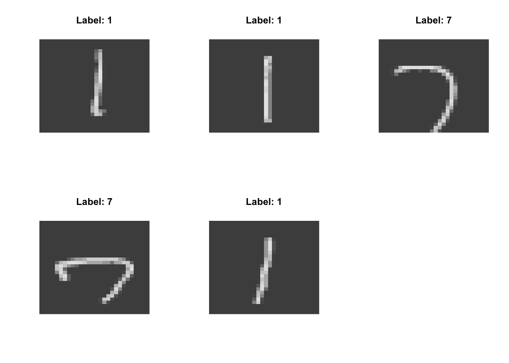
High on PC-2:
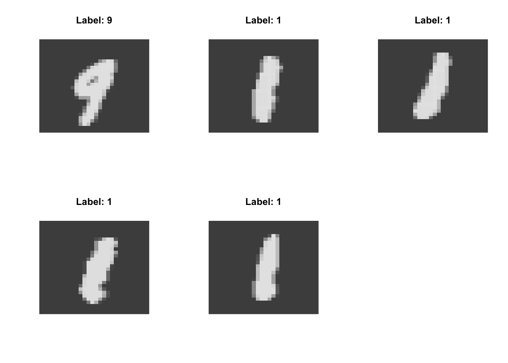
Low on PC-2:
High on \(t\)-SNE Dimension 1:
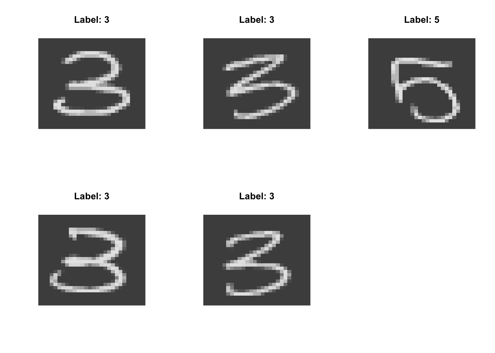
Low on \(t\)-SNE Dimension 1:
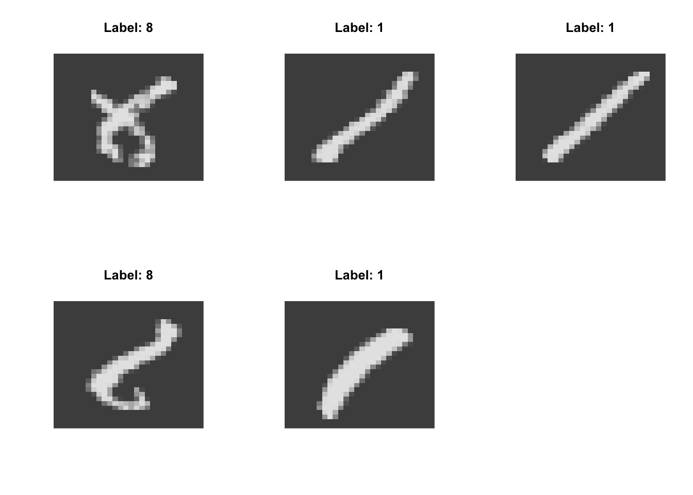
High on \(t\)-SNE Dimension 2:
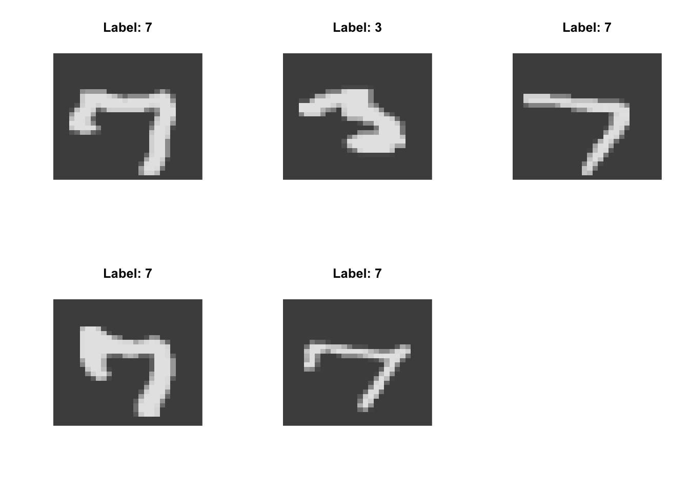
Low on \(t\)-SNE Dimension 2:
High on UMAP Dimension 1:
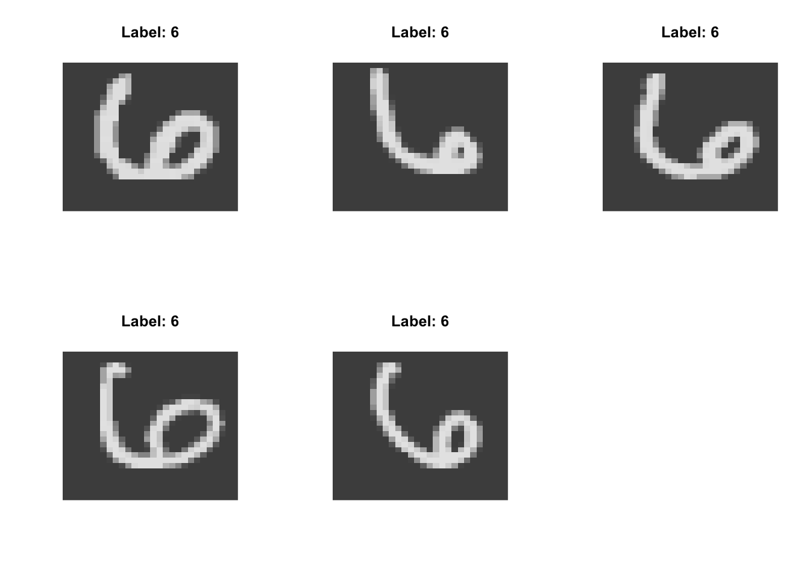
Low on UMAP Dimension 1:
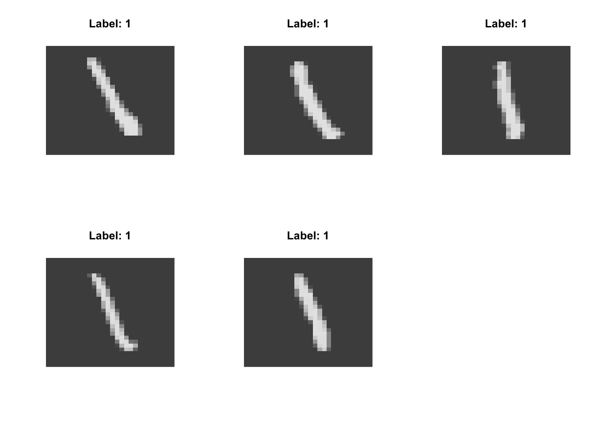
High on UMAP Dimension 2:
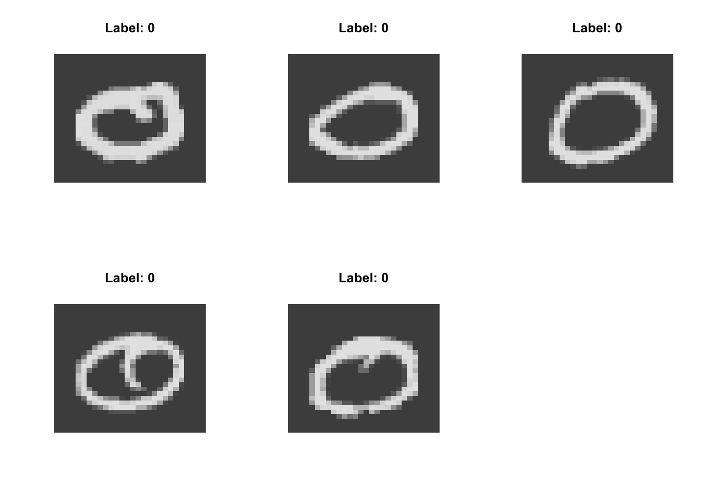
Low on UMAP Dimension 2:
For details, read more here.
Variational Autoencoders
Footnotes
-
In case you haven’t. Suppose we have \(n\) scalars \(a_i, \dots, a_n\). Then
\[\begin{align*} \sum_{i, j} (a_i - a_j)^2 &= \sum_{i, j} a_i^2 - 2a_ia_j + a_j^2 \\ &= \left(\sum_{i, j} a_i^2\right) - 2\left(\sum_{i, j} a_ia_j\right) + \left(\sum_{i, j} a_j^2\right) \\ &= \left(n\sum_{i} a_i^2\right) - 2\left(\sum_{i}a_i\right)\left(\sum_j a_j\right) + \left(n\sum_j a_j^2\right) \\ &= \left(n\sum_{i} a_i^2\right) - 2\left(\sum_{i}a_i\right)\left(\sum_i a_i\right) + \left(n\sum_i a_i^2\right) \\ &= 2n\left(\sum_i a_i^2\right) - 2\left(\sum_i a_i\right)^2 \\ &= 2n\left[\sum_i a_i^2 - \frac{1}{n}\left(\sum_i a_i\right)^2\right] \\ &= 2n\left[\sum_i a_i^2 - \frac{2}{n}\left(\sum_i a_i\right)^2 + \frac{1}{n}\left(\sum_i a_i\right)^2\right] \\ &= 2n\left[\sum_i a_i^2 - 2\left(\frac{\sum_i a_i}{n}\right)\left(\sum_i a_i\right) + n\left(\frac{\sum_i a_i}{n}\right)^2\right] \\ &= 2n\left[\sum_i a_i^2 - 2\overline{a})\left(\sum_i a_i\right) + n\overline{a}^2\right] \\ &= 2n \left(\sum_i a_i^2 - 2\overline{a}a_i + \overline{a}^2\right) \\ &= 2n \sum_i (a_i - \overline{a}^2) \end{align*}\]
Ok - that was a lot! To confirm your understanding, try to write this out using means and variances instead of sums of squares.↩︎
Here, \(\bH\) is not the hat matrix from OLS theory.↩︎
Cf. the Narcissim (sometimes Tyranny) of Small Differences↩︎
Because we’re always capped at 100% probability, when heavy-tailed distributions put more probability in the tails, they have to put less in the ‘core’ of the distribution. In our context, this means that models will be less willing to make changes to points that are relatively close to each other, preserving neighborhood structure.↩︎